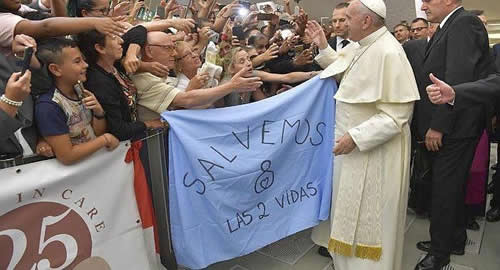

Real Chubut - Agencia de Noticias


El triunfo político no solo fue del papa Francisco

La caída en desgracia de la ley de despenalización del aborto no abre un momento de celebración en la Iglesia católica, sino de reconocimiento. Reconocimiento a una estrategia que se diseñó en el exterior y que en la Argentina contó con el apoyo de los "obedientes" del cuarto voto.
La Compañía de Jesús es la orden religiosa masculina más grande del mundo, con más de 18.000 miembros distribuidos en cinco continentes. El Papa Francisco es el primero. La orden la fundó en 1540 en Roma San Ignacio de Loyola, un estratega militar que previó la necesidad de "sacar" un ejército misionero fuera de los límites vaticanos, que garantice en el mundo la incondicional defensa de las posiciones papales.
Loyola fue un cultor del discernimiento espiritual. Ante el pensamiento binario, frente al desafío de optar por una opción o la contraria, de intentar distinguir entre el bien y el mal, el primer general de La Compañía se recluía en soledad a "escuchar" la voz de Dios en el interior humano. Sin apuros, reflexionando, Loyola decía que se podían superar los obstáculos que se interponen en el camino del bien, para que el estado de ánimo se regocije de fuerza, paz, alegría y armonía. Esperar que las cosas pasen, para hacer lo que se cree es lo correcto y necesario. Esa fue la estrategia del Papa en el debate por el aborto. Dejar pasar la votación en Diputados para caer con todo el peso del discernimiento en el Senado.
Los que frecuentaban a Jorge Bergoglio recuerdan con admiración la pasión del Sumo Pontífice por la doctrina militar de Loyola y el accionar histórico de La Compañía, el "Grupo de Elite" que posee el Papa dentro de la Iglesia. "Los jesuitas se anticipan y tienen la capacidad de estar en varios lugares al mismo tiempo".
Desde los 40 votos que obtuvo Bergoglio en la tercera votación del cónclave de 2005, donde luego Joseph Ratzinger se convirtió en Benedicto XVI, fue el exarzobispo porteño quien entendió más que nadie que es "mejor construir procesos que ocupar espacios". Lo dejó por escrito en la Evangelii gaudium (La alegría del evangelio), la exhortación apostólica que redactó con el propio Benedicto y donde recomiendan a sus pastores "aceptar la costosa evolución de los procesos".
Sin apuros, reflexionando, buscando la unidad en la oposición, así se preparó el desembarco de la Multisectorial 21F en Capital Federal para mediados de agosto. La foto entre Cristina de Kirchner y Hugo Moyano en Cañuelas es parte de un proceso. El cambio de voto de la senadora nacional Silvina Marcela García Larraburu, también. La borocotización del pensamiento de la confidente de la expresidente en la Cámara alta fue tenida en cuenta como una devolución de gentileza al pedido explícito que el Papa envió a Cristina a través de un obispo para que sea candidata en 2019, que ventilóHoracio Verbitsky en el Cohete.
Los peronistas por la vida serán parte del reconocimiento a una estrategia eficaz. "El aborto es la cultura del descarte", coincidieron dirigentes justicialistas de todas las vertientes y sectores, como el propio Moyano, Carlos Menem, Héctor Daer, Jorge Capitanich, Antonio Caló, Gustavo Béliz, Jorge Rulli, Alberto García Lema, Julio Piumato, Alieto Guadgni, y Mariano Pinedo, entre otros.
La militancia de la Iglesia en contra de la ley que se vio en la semana previa al debate en el Senado no se vio antes, con el tratamiento en Diputados. Misas, actos, marchas, documentos públicos, mails privados, apariciones mediáticas, viajes pagos, vigilias, charlas reservadas, llamadas telefónicas y mensajes por WhatsApp. Por esos medios y algunos otros, los "obedientes" del cuarto voto incrementaron la presión sobre los senadores para llegar al 8A con un resultado cantado. Sobre las 11 provincias del Norte, 56 días después de la votación en Diputados, el discernimiento sobre el aborto en el Senado logró una efectividad casi 80%.
Pasarán a la historia los senadores de la UCR que votaron en contra, como Ángel Rozas, Julio Cobos o Juan Carlos Marino, que resistieron puertas adentro a la juventud radical, que les reclamó honrar los lineamientos históricos del partido y el espíritu de "siempre conquistar nuevos derechos".
En el PRO se felicitará a Esteban Bullrich, vocero porfiado de la postura "celeste", emparentado en reiteradas ocasiones con el Opus Dei, dirigido por otro ferviente opositor a la iniciativa, el Prelado Fernando Ocáriz. A Federico Pinedo le reconocerán la estrategia de bajar al recinto sin dictamen, lo que permitió encorsetar los votos negativos, dividir a los positivos y finalmente archivar por un año el proyecto.
• El aporte evangélico
Pero el triunfo político no solo fue del Papa Francisco. Macri habilitó este debate parlamentario al día siguiente del acto fundacional del 21F, con la convicción de que no tendría la necesidad de promulgar la ley del aborto. "No sale, y si sale, la voy a vetar", le prometió el Presidente a los poderosos evangélicos de Aciera, que enfrentaron a los anglicanos y luteranos, se cargaron al hombro la triunfante campaña por el salvamiento de las dos vidas. Caída la despenalización, se comprueban los dichos de Elisa Carrió, socia antiabortista del líder del PRO: Macri habilitó el debate con la información de que no se convertiría en ley. ¿Lo hizo para tapar las repercusiones mediáticas del 21F? ¿Para mojarle la oreja al Papa?
Los aceitados vínculos entre el macrismo y Aciera están al descubierto, con presencias públicas de Horacio Rodríguez Larreta en los Tedeum del Día de Acción de Gracias, o en las cartas firmadas por Macri en agradecimiento a los "aportes que hace a nuestra sociedad" la Alianza Cristiana de Iglesias Evangélicas.
A las puertas del 2019, a los que ya se lanzaron a la caza de votos se les prohíbe cerrar el grifo de los sufragios. "El año próximo será un año electoral y como habitualmente sucede, cientos de políticos se acercarán a las congregaciones a lo largo de toda la Nación, desde pequeños pueblos a grandes ciudades, para obtener el apoyo y los votos de los miembros de las Iglesias. Sin embargo, las Iglesias de todas la Argentina han decidido en unidad, como cristianos comprometidos con el derecho a la vida, mantener una postura enfática frente a todos aquellos este mismo sentido, las Iglesias Evangélicas de la Argentina no apoyarán a ningún candidato que promueva, adhiera o legalice el aborto en el país", alertó Aciera seis días antes de la votación.
El Consejo Directivo de la Alianza está bajo control de pastores conservadores, con una milagrosa capacidad de movilización. "Son líderes radicales PRO en medio de un rebaño de ovejas peronistas", caracterizan desde el catolicismo bergogliano, donde no se oculta la feroz puja con los curas villeros por el trabajo territorial en las barriadas y las cárceles.
Serán esos sacerdotes en opción por los pobres otros de los triunfadores del destierro de la ley del aborto, a pesar del tenor de sus discursos y las críticas recibidas. También serán reconocidas las autoridades eclesiásticas designadas por Francisco, que tomaron altos cargos jerárquicos en las últimas semanas, y otras que asumieron poco después de la consagración tardía del 13 de marzo de 2013.
Lentamente, reflexionando, Francisco va cumpliendo con cada uno de los objetivos propuestos, tras su renunciamiento al papado en 2005. El freno a la ley del aborto en su país fue uno de ellos. El Cuidado de la Casa Común es el gran desafío de su esperable corto mandato. Si se avecina el principio del fin de su propio proceso es una cuestión de discernimiento espiritual y político.
Fuente: Ambito